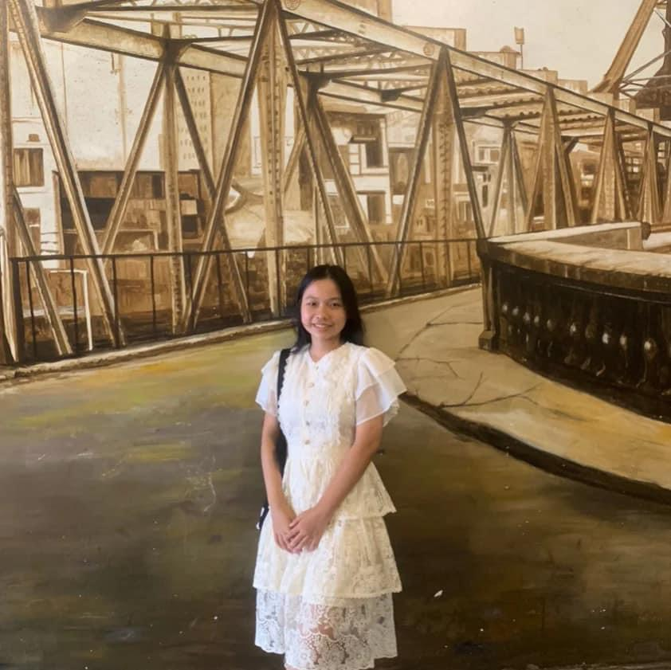
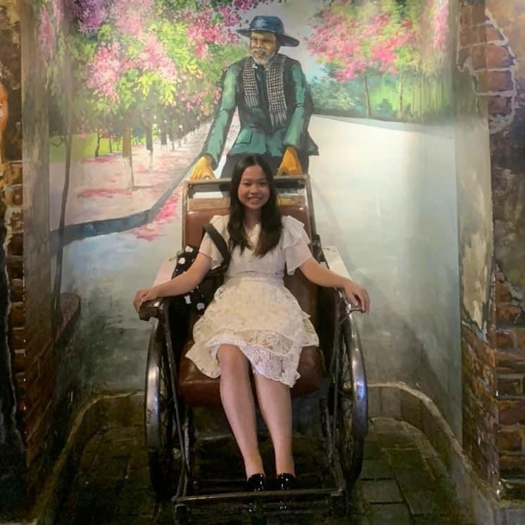
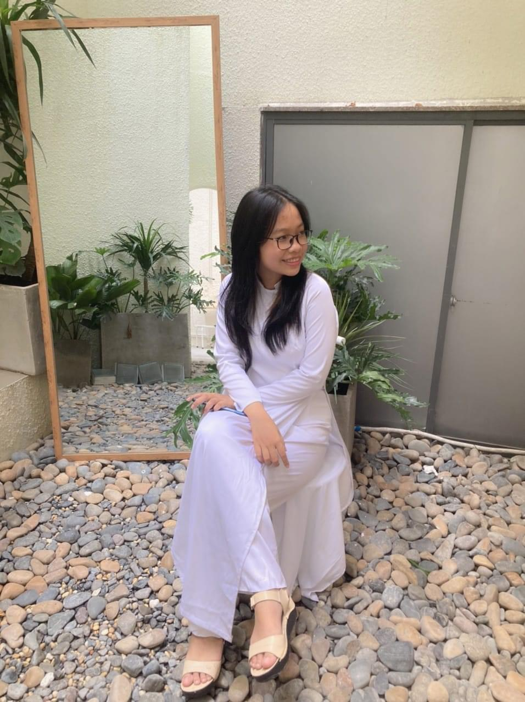
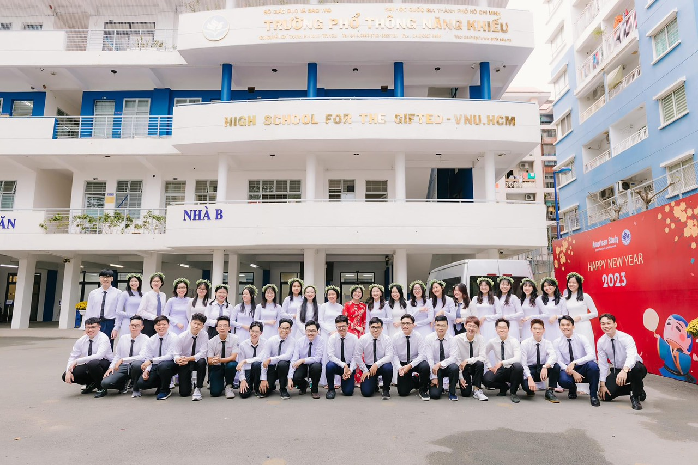
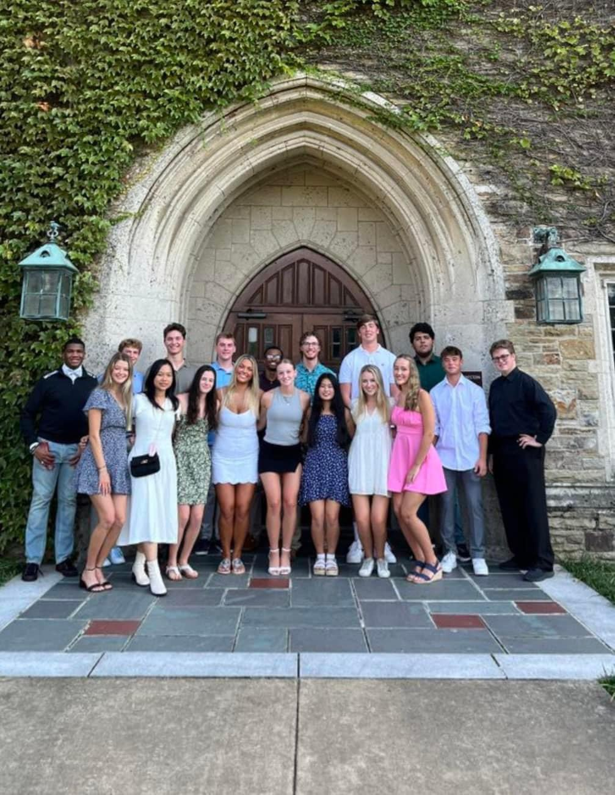

I am a rising sophomore at Rhodes College , currently pursuing a major in Computer Science. I am an international student from Vietnam and traveled to the US to study abroad in 2023. With a passion for technology and problem-solving, I am eager to deepen my understanding of software development, data structures, and algorithms. My academic journey so far has equipped me with a solid foundation in computer science principles, and I am excited to continue expanding my skills through coursework, projects, and internships. I am always open to connecting with professionals in the field and exploring opportunities that will allow me to apply my knowledge and grow as a computer scientist. Feel free to reach out if you'd like to connect or discuss potential collaborations.
Technical skills: Java, Python, C++, SQL, R, HTML, CSS
Growing up with parents from Hanoi has instilled in me a deep connection to the city. Despite not being born or raised there, I have always spoken the Northern accent fluently. My childhood was marked by a sense of alienation and discrimination due to my accent, which made me reluctant to embrace my roots openly. However, as I matured, I came to appreciate the rich heritage and beauty of Hanoi. I now take pride in being connected to this vibrant city, which holds a special place in my heart as the capital of Vietnam.
 Growing up in Ho Chi Minh City, or Saigon, I developed a deep affection for the place where I spent my childhood. Unlike my parents, who are from Hanoi, I was born and raised in this bustling, vibrant city. Here, I formed lasting friendships and built strong connections with my relatives. One of the most cherished aspects of my life in Saigon is my high school, VNU-High School for the Gifted, which holds a special place in my heart. This city has shaped me in countless ways, and I hold a profound appreciation for its culture, energy, and the community that has supported me throughout my formative years.
 At the age of 18, I flew to Memphis, USA, to study abroad, marking my first journey without my family. The cultural differences initially shocked me, but I quickly adapted and made many new friends. I have spent wonderful times here with them, and I have grown to love the peaceful environment of Memphis. The experience has broadened my horizons and enriched my life in ways I could never have imagined.
